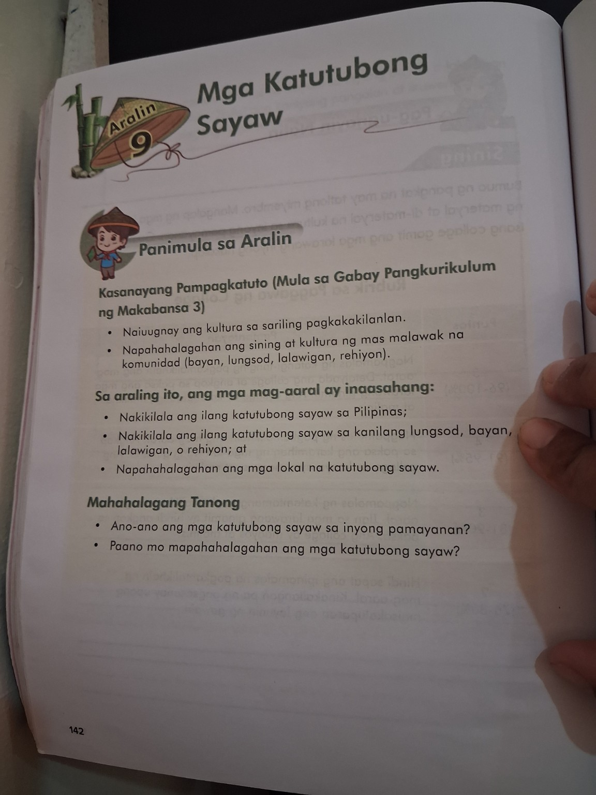
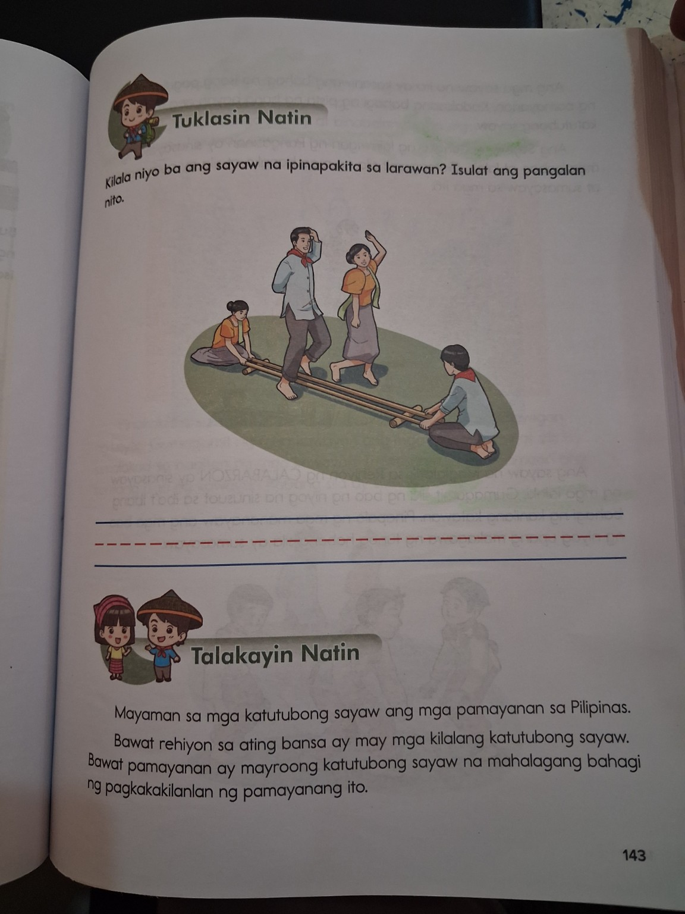
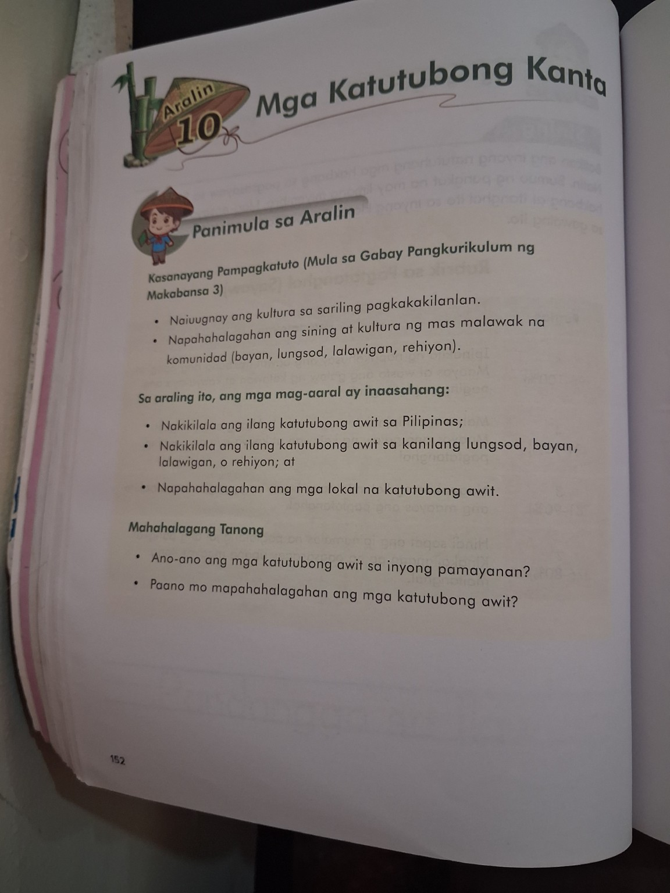
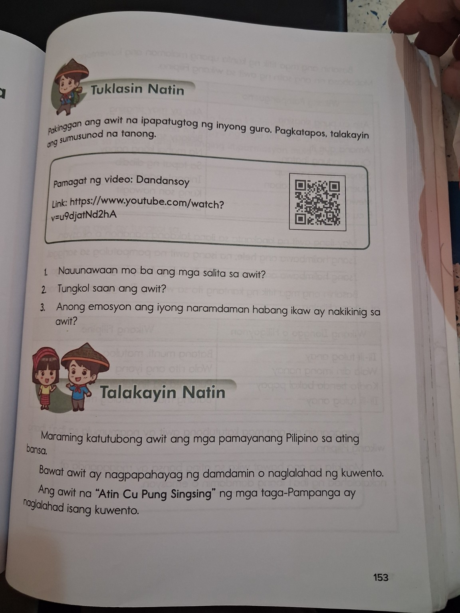
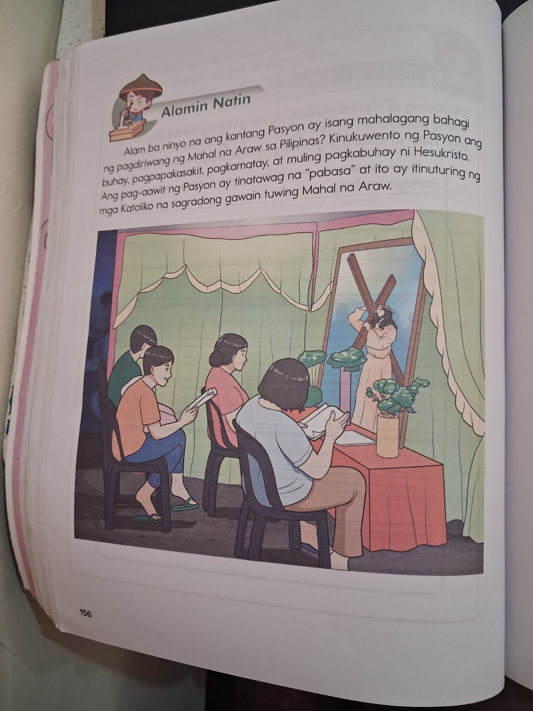
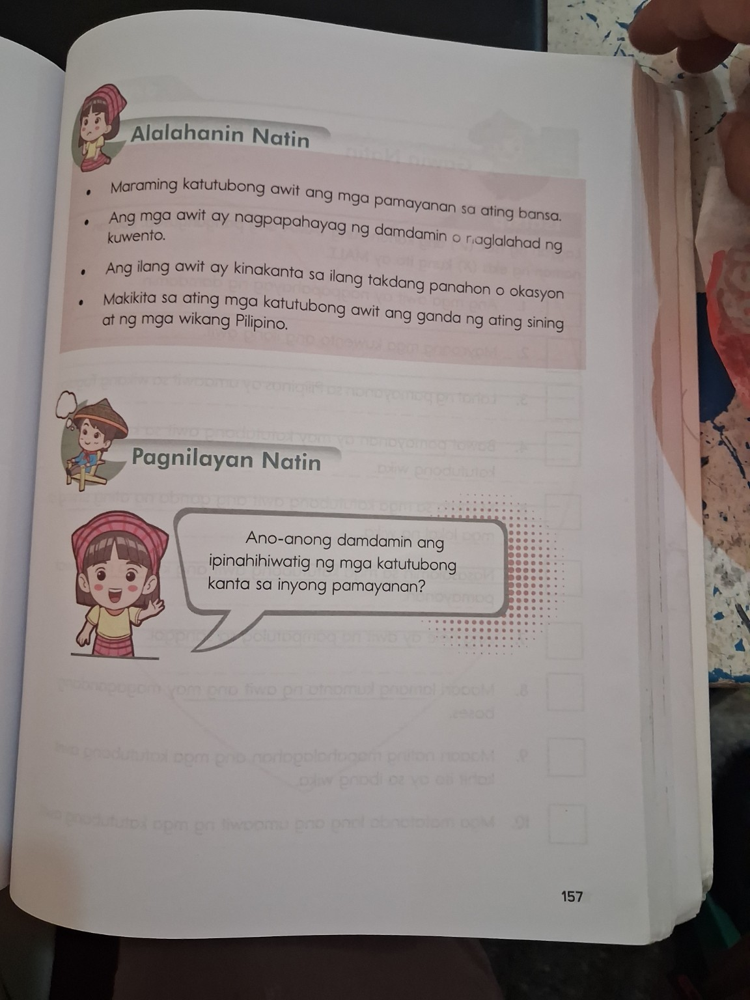

Aralin 9
Mga Katutubong Sayaw
Sayaw sa Bangko • Maglalatik • Pandanggo sa Ilaw • Tinikling • Pangalay
 TEACHER ED LEARNING HUBEDJAY • Teach. Lead. Inspire.
TEACHER ED LEARNING HUBEDJAY • Teach. Lead. Inspire.Magbalik-aral, maglaro, at subukin ang iyong natutuhan gamit ang mga paksa mula sa Aralin 9 at Aralin 10.
Gamitin ang reviewer bilang katuwang ng inyong aklat. Filipino ang pangunahing wika.
Culture QuestLearn • Recall • Apply • MasterSayaw sa Bangko • Maglalatik • Pandanggo sa Ilaw • Tinikling • Pangalay
Dandansoy • Atin Cu Pung Singsing • Ti-Ti Tulong Anay • Pasyon
Multiple Choice (3 pagpipilian), pag-uuri, Tama o Mali, pagkilala, at HOTS.
Basahin muna ang mga paalala bago sagutan ang 30-item reviewer.
Isa sa limang sayaw na dapat balikan sa Aralin 9.
One of the five dances listed in Lesson 9.Isa sa mga katutubong sayaw sa listahan ng inyong pointer.
A traditional dance included in your review pointers.Balikan ang paglalarawan at detalye nito sa aklat.
Review its description and details in the textbook.Balikan ang pangunahing katangian at paraan ng pagsasagawa nito sa inyong aralin.
Review its main characteristics and how it is performed in your lesson.Isa sa limang katutubong sayaw na kasama sa pointer.
One of the five traditional dances in your pointers.Sa Aralin 9, binibigyang-diin ang pagkilala sa mga katutubong sayaw sa Pilipinas at sa mga pamayanan, gayundin ang pagpapahalaga sa lokal na sining at kultura.
Lesson 9 emphasizes identifying traditional dances in the Philippines and communities, and valuing local art and culture.Sa pahina 153, pinakikinggan ang awit at pinag-uusapan ang kahulugan ng mga salita, paksa, at damdaming ipinahahayag nito.
Page 153 asks learners to listen and discuss the words, topic, and feelings expressed.Ayon sa pahina 153, ang awit ng mga taga-Pampanga ay naglalahad ng isang kuwento.
Page 153 states that this song of the Kapampangan people tells a story.Isa sa apat na katutubong kanta sa iyong pointer. Balikan ang eksaktong detalye sa talakayan ng klase.
One of the four folk songs in your pointers. Review the exact details from class.Ayon sa pahina 156, kinukuwento nito ang buhay, pagpapakasakit, pagkamatay, at muling pagkabuhay ni Hesukristo. Ang pag-awit nito ay tinatawag na “pabasa” at isinasagawa sa Mahal na Araw.
Page 156 explains the story told by the Pasyon and identifies its chanting as the “pabasa,” associated with Holy Week.Maraming katutubong awit ang mga pamayanang Pilipino. Ang mga awit ay maaaring magpahayag ng damdamin o maglahad ng kuwento; may mga awit ding kinakanta sa takdang panahon o okasyon. Makikita sa mga ito ang ganda ng sining at mga wikang Pilipino.
Folk songs can express feelings, tell stories, or be sung on particular occasions. They reflect Filipino arts and languages.Mga pahina ng aklat na naisama sa reviewer para madali mong mabalikan ang sanggunian. Ang mga larawan ay para sa pag-aaral kasama ng sariling aklat.






Sagutan ang bawat tanong. May tatlong pagpipilian lamang sa multiple choice.
CULTURE QUEST • RESULTA